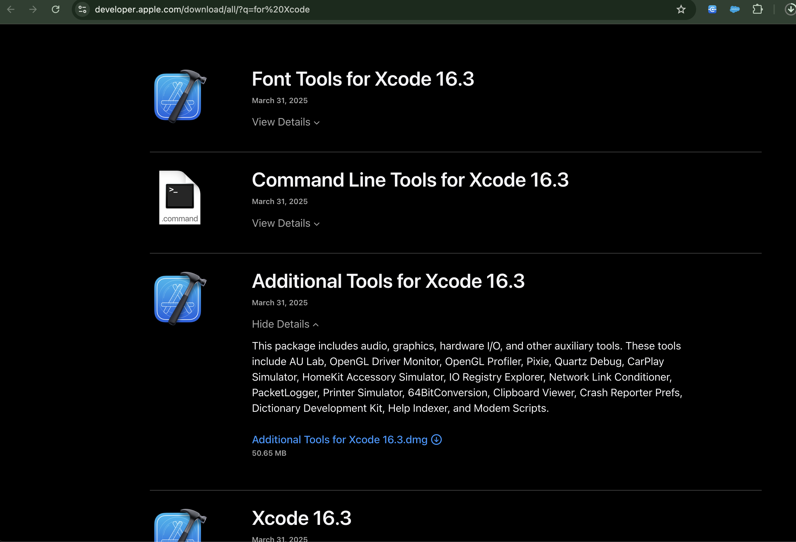

Steps to Simulate Network Throttling
Step 0: Xcode > Open Developer Tools > More Developer Tools

Step 1: Download Additional Tools for Xcode 16.3
Step 2: Navigate to Network Link Conditioner in the Hardware folder
Step 3: Enable Network Link Conditioner
Step 4: Choose a Network Profile
Step 5: Network Throttling Applied